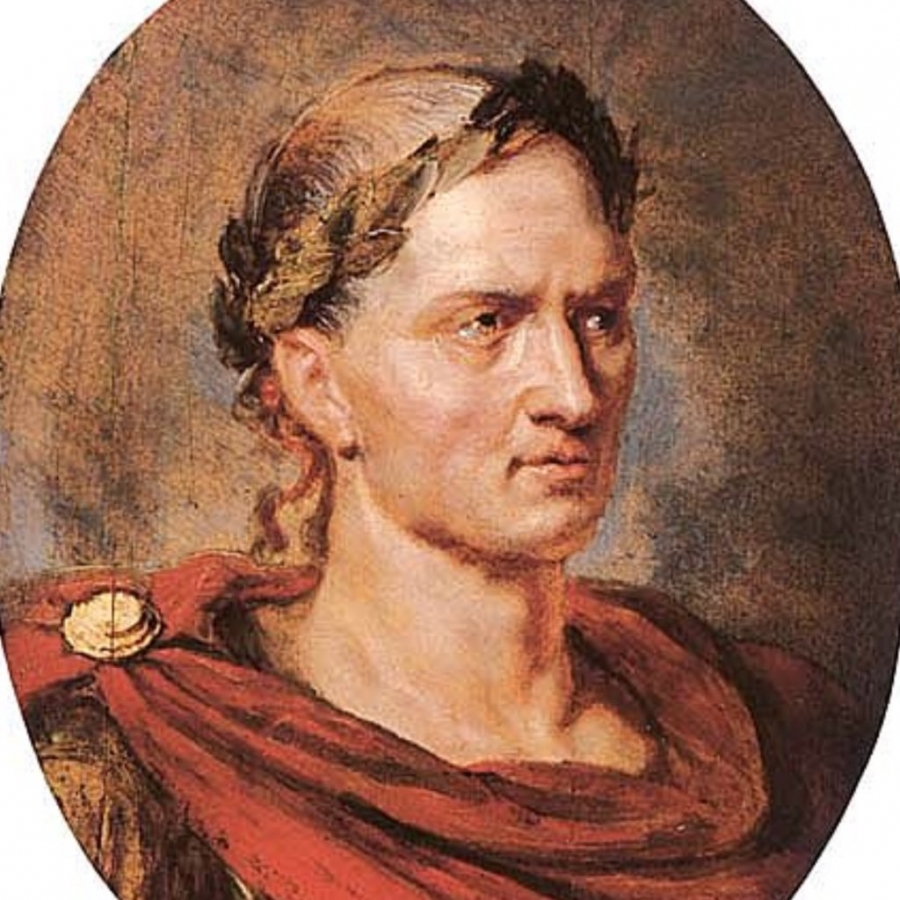

Aşağıda Dünya Tarihi, felsefe ve Politika ile ilgili çeşitli blog yazıları görebilirsiniz.
Donec vitae magna fermentum odio finibus imperdiet. Phasellus maximus neque nulla, varius malesuada ex scelerisque in. Praesent in orci eros. Aenean sagittis, ipsum id auctor vehicula, odio leo faucibus risus, at porttitor sem ex vel leo. Praesent dapibus vulputate diam, id viverra sapien elementum ac. In condimentum felis ut purus placerat, nec tincidunt sapien sagittis. Etiam scelerisque lorem non mi tempus, et fermentum ipsum venenatis. Proin vel massa sem. Aliquam ante magna, porttitor iaculis arcu eget, elementum vestibulum augue. Curabitur sed arcu leo. Etiam pretium nulla metus, id semper odio maximus et. Curabitur quis tortor facilisis, fermentum ligula gravida, porttitor velit. Donec pellentesque ornare urna, ut facilisis ex condimentum malesuada.
Aliquam erat volutpat. Sed id libero purus. Quisque condimentum condimentum enim at aliquam. Ut bibendum libero at finibus ullamcorper. Integer dolor mi, venenatis ut sem a, elementum sagittis nibh. Suspendisse ornare molestie nisl, eget aliquam magna dignissim et. Nullam pretium tellus justo, vitae sollicitudin augue blandit quis. Sed in dignissim lectus, finibus egestas lorem. Nullam vitae risus consequat, porttitor sapien sed, ornare mi. Sed tincidunt sem ut orci interdum scelerisque. Fusce ut purus sapien. Fusce in est lorem. Aliquam placerat dolor in ligula vehicula, condimentum commodo ante interdum. Pellentesque sit amet metus tellus.

Proin eu magna quis magna fringilla venenatis eget at elit. Quisque feugiat purus vitae velit interdum, et porttitor enim pellentesque. Morbi id lacus velit. Nulla in mauris non lorem sagittis mollis eu vel nulla. Quisque eget sapien et ipsum bibendum mollis eget sed eros. Vestibulum ante ipsum primis in faucibus orci luctus et ultrices posuere cubilia curae; Curabitur sollicitudin posuere nunc, et dignissim diam scelerisque non. Proin quis erat augue. Morbi felis risus, dictum vitae cursus ac, sollicitudin non nunc.

Aenean vehicula auctor quam nec placerat. Suspendisse vitae mattis nunc, sed vehicula elit. Integer pretium sit amet velit a volutpat. Curabitur elementum scelerisque sem a sodales. Phasellus eu leo fringilla, feugiat mauris a, semper nunc. Vestibulum in tempus nisi. Integer sed venenatis lorem. Etiam vitae erat ornare, pretium libero sed, imperdiet sapien. Maecenas consequat non quam vitae pharetra. Etiam tincidunt quam eu libero ullamcorper, sit amet auctor leo ultrices. Praesent nec maximus urna. Vivamus accumsan, nunc eget elementum facilisis, est nibh tempor est, non suscipit mauris massa id turpis. Sed id dui quis libero cursus lacinia. Donec varius sollicitudin nisi, in mattis nisl. Curabitur scelerisque dolor non odio imperdiet, vitae malesuada nulla blandit. Vivamus quis lectus dignissim, placerat lectus eget, egestas ipsum.
Curabitur a magna vel leo mollis iaculis ut sit amet magna. Vivamus nisl enim, porttitor non convallis id, faucibus non velit. Quisque id lacus dapibus dui vehicula lacinia pellentesque pellentesque nunc. Phasellus interdum mi et ligula varius, rutrum elementum mauris accumsan. Vivamus vestibulum mauris vitae sem mollis consectetur. Duis ac mi ac risus lobortis iaculis at malesuada libero. Donec convallis ac sapien ac ultrices. Mauris fringilla libero ac leo accumsan condimentum. Vivamus sodales, metus sed porta blandit, eros ligula ultricies eros, at suscipit tellus lectus at est. Vestibulum venenatis neque erat, vel congue magna molestie quis. Praesent non leo diam.
Nulla eu massa nec neque fringilla sollicitudin. Suspendisse pellentesque lacus nec ipsum porttitor pulvinar. Duis dignissim pretium nisl in facilisis. Pellentesque interdum dui a ullamcorper accumsan. Mauris bibendum ultrices elit sit amet sodales. Quisque imperdiet egestas ligula, ultrices accumsan quam imperdiet eu. Donec consectetur, nunc non congue cursus, sapien erat consectetur metus, ut volutpat sem purus non justo. Vestibulum ornare purus eget massa fringilla, ac ultrices erat molestie. Curabitur faucibus, elit eu posuere gravida, sem odio scelerisque sapien, et euismod nunc magna at diam. Nullam consequat mollis vulputate. Aliquam imperdiet mauris semper, vestibulum ex non, dignissim turpis. Nam metus lectus, gravida eget massa id, ultricies semper est. Nulla imperdiet nec dolor sed auctor. Praesent dapibus ante in ante varius, ac elementum magna pellentesque. Aenean at tincidunt leo, et facilisis enim. Cras fermentum erat sed aliquam efficitur.